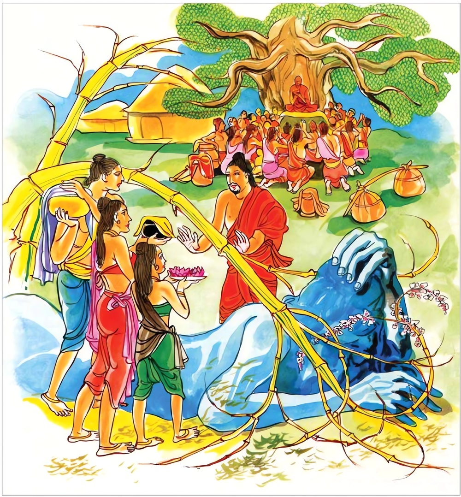

12-8 කාල ස්ථවිරයන් වහන්සේ
මෙම කතාව ධම්මපද අටුවාවෙන් ද කියවන්න.
යො සාසනං අරහතං අරියානං ධම්මජීවිනං
පටික්කොසති දුම්මෙධො දිට්ඨිං නිස්සාය පාපිකං
ඵලානි කට්ඨකස්සෙව අත්තඝඤ්ඤාය ඵල්ලති.
යම් අඥාන පුද්ගලයෙක් (තමහට වන ලාභසත්කාරයට හානි වෙතැ යි බියෙන්) ලාමක වූ දෘෂ්ටිය නිසා නිකෙලෙස් වූ, දැහැමින් ජීවත් වන සුලු වූ, (බුද්ධාදි) ආර්ය්යයන්ගේ අනුශාසනය වළකා ද, (ඔහුගේ ඒ ප්රතික්රෝශනය ද ලාමක දෘෂ්ටිය ද) හුනගස්හුගේ පල ගැන්ම මෙන් ආත්මවධය පිණිස (තමහට විනාශය පිණිස) පල ගන්නේ ය (හෙවත් නිපදනේ ය).

මෙ තෙමේ, අප බුදුරජුන් දවස සැවැත් නුවර ඇසුරු කොට විසි ය. එහි එක් උපාසිකාවක් මවක සේ මොහුට උපස්ථාන කරයි. එහි මෑගේ ගේ අවට පිහිටි ගෙවල විසූ මිනිසුන් බුදුරජුන් වෙතින් බණ අසා අවුත් “බුදුවරු පුදුම ගුණ ඇත්තෝ ය. උන්වහන්සේලාගේ දම් දෙසුම් ඉතා රසවත් ය” යි කියනු ඇසූ ඒ ස්ත්රිය දිනෙක කාල තෙරුන් වෙත ගොස් “ස්වාමීන් වහන්ස! මම බණ අසන්නට බුදුරජුන් වෙත යන්නෙමි” යි කිවූ ය. කාල තෙමේ “බණ අසන්නට එහි යා යුතු දැ” යි ඇය එයින් වැළකී ය. එහෙත් ඕතොමෝ බණ අසනට යා යුතු ම බව නැවත නැවතත් දැන් වූ ය. කාල තෙරුන් ඒ හැම වරෙක ම ඕ තොමෝ වළකනු ලැබුවා ය. තෙරුන් විසින් එසේ වළක්වන ලද්දී, උපාසිකාව බුදුරජුන් වෙතින් බණ ඇසූ නම්, තමන් කෙරෙහි කළකිරෙණු ඇතැ යි අදහස් කොට ය.
උපාසිකා තොමෝ දවසක් අලුයමින් නැගිට කා බී පෙහෙවස් ගෙණ දු අමතා “අපේ හාමුදුරුවන් හොඳින් වළඳවන්නැ” යි නියම කොට වෙහෙරට ගියා ය. ඕ ද තෙරුන් ගෙට වැඩි වේලේ මෑනියන් කී ලෙසට තෙරුන් වැළඳෙව්වා ය. ස්ථවිර තෙමේ වළඳා අවසන් කොට “උපාසිකාව කොහි ගියා දැ” යි ඇසී ය. “පෙහෙවස් ගෙණ වෙහෙරට ගියා” යි දැන් වූ කල්හි තෙරුන් බඩ, ගිනි හට ගත්තේ ය. ඇඟ ගැහෙන්නට වන. “වැරදුනා, කෑ බත් පමණ ය. මෑ මා කෙරෙහි කළ කිරෙණු ඒකාන්ත ය” යි සිතු ස්ථවිර තෙමේ වේගයන් වෙහෙරට ගොස් උපාසිකාව බුදුරජුන් වෙත හිඳ බණ අසනු දැක බුදුරජුන් වෙත ගොස් “ස්වාමීනි! ඔය උපාසිකාව මෝඩ ය. සියුම් ගැඹුරු බණ මැයට වැඩෙක් නැත. දන් සිල් ගැන බණ ටිකක් දේසනා කිරීම මෑට පමණ ය” යි කියා සිටියේ ය. එකල්හි බුදුරජානන් වහන්සේ “තමුසේ ය මෝඩ, කැත අදහසක් නිසා මෙසේ කියහු, තා කියනා ලෙසට මම බණ කියම් ද? එසේ සිතුවහු ද? තමුසේ, තමුසේගේ විනාශයට මග පාදාගණු මට පෙණේ ය” යි වදාරා මේ ධර්මදේශනාව කළ සේක.
යො සාසනං අරහතං අරියානං ධම්මජීවිතං,
පටික්කොසති දුම්මෙධො දිට්ඨිං නිසාය පාපිකං,
ඵලානි කට්ඨකස්සෙව අත්තඝඤ්ඤාය ඵල්ලතීති.
යම් අඥයෙක්, පහත් අදහස් නිසා දැහැමින් දිවි යවන පව් නසා සිටි බුද්ධාදී ආර්ය්යයන් වහන්සේලාගේ ධර්මානුශාසනාව වළකා ලන්නේ ද (එය) උණගසේ පල ගැන්ම සේ තමාගේ විනාශය පිණිස පල ගන්නේ ය.
යො දුම්මෙධො = යම් අඥයෙක්. මෝඩයෙක්. [1]
පාපිකං දිට්ඨිං නිස්සාය = ලාමකදෘෂ්ටිය නිසා. පහත් අදහස් උපදවා.
මෙහි පාපිකදෘෂ්ටිය නම්, තමාට ලාභසත්කාර පිරිහේය යන බියෙන් උපදවා ගත් කැත අදහස ය.
අරහතං අරියානං ධම්මජීවිතං = නික්ලේශී වූ දැහැමින් දිවි ගලවන බුද්ධාදී ආර්ය්යයන්ගේ. [2]
සාසනං පටික්කොසති = අනුශාසනාව වළකා ද.
සාසන නම්, බුදුරජුන්ගේ අනුශාසනාය. බුදුරජුන් පිළිබඳ ස්කන්ධ ධාතු ආයතනාදී කථා ය. ඒ මේ බුද්ධ වචනය අනුශාසනාර්ත්ථයෙන් සාසන නමි. “අනුසාසනට්ඨෙන සාසනන්ති වුච්චති” යනු ආචාර්ය්යවචනයි. “යො ත්වං ආනන්ද! මයා ධම්මො ච විනයො ච දෙසිතො පඤ්ඤත්තො සො වො මමච්චයෙන සත්ථා” යන මේ බුදු වදනිනුදු එය පැහැදිලි වේ. “ආනන්දය! තොපට මා විසින් යම් ධර්මයෙක් යම් විනයයෙක් දෙසන ලද ද පණවන ලද ද ඒ ධර්මවිනය මාගේ ඇවෑමෙන් තොපට ශාසන වන්න්නේ ය” යනු එහි කෙටි තේරුම ය.
“මේ ගරු ඇවැත, මේ ලඝු ඇවැත” යනාදීන් වෙන් වෙන් කොට බෙදා විනයපිටක ය අනුශාසනා කරන්නේ ය. “මේ සතිපට්ඨාන, මේ සතර සම්යක් ප්රධාන” යනාදීන් සත්තිස් බෝ පැකි දම් විනෙයජනයන්ගේ අදහස් පරිදි විභාග කොට සූත්ර පිටකය අනුශාසනා කරන්නේ ය. “මේ පංචස්කන්ධ ය. මේ ද්වාදශායතනය” යනාදීන් ස්කන්ධ ධාතු ආයතනාදිය ඇති තාක් විභාග කොට අභිධර්ම පිටකය අනුශාසනා කරන්නේ ය. “අභිසම්බෝධියේ පටන් පිරිනිවීම තෙක් පිටක වශයෙන් නිකාය වශයෙන් අඞ්ග වශයෙන් ස්කන්ධ වශයෙන් දේශනා කළ අසූසාරදහසක් ධර්මස්කන්ධයෝ තොපට අනුශාසනා කෙරෙති” යි වදාළ වචනයෙනුදු ත්රිපිටක බුද්ධවචනය සාසනය බව ව්යක්ත ය. සාසනය, පර්ය්යාප්ති, ප්රතිපත්ති, ප්රතිවේධ, අධිශීල, අධිචිත්ත, අධිප්රඥා ඈ විසින් ද බෙදී යන්නේ ය.
ඵලානි කට්ඨකස්සෙව අත්තසඤ්ඤාය ඵල්ලති = උණගසේ පල හටගැන්ම මෙන් තමාගේ විනාශය පිණිස පල ගන්නේ ය.
අඥානයාගේ බුද්ධානුසාසනය වළකාලීම, ලාමක අදහස යන මේ දෙක, උණගසෙහි පල ගැන්ම උණගසෙහි විනාශය පිණිස වන්නා සේ අඥානයාගේ විනාශය පිණිස වන්නේ ය. පල ගැමෙන් පසු උණගස වැනසී යන්නා සේ බුද්ධානුශාසනා වළකාලීමෙන් හා ලාමක අදහස් ඉපිද වීමෙන් අඥයා නැසෙන්නේ ය. කෙහෙල් කැන කෙහෙල් ගස නසයි. උණපලය උණගස නසයි. බටපලය බටගස නසයි. දරුගැබ අස්වෙළඹ නසයි. එමෙන් සත්කාරය තෙමේ ලාමක පුරුෂයා නසයි. මේ එය කියු සැටි.
“ඵලං චෙ කදලිං හන්ති ඵලං වෙළුං ඵලං නළං,
සක්කාරො කාපුරිසං හන්ති ගබ්හො අස්සතරිං යථා” යි
ධර්මදේශනාවගේ අවසානයෙහි උවැසිය සෝවාන් වූ ය. ධර්ම දේශනාව පැමිණ සිටි පිරිසට ද වැඩ සහිත වූවා ය.
කාලස්ථවිර වස්තුව නිමි.